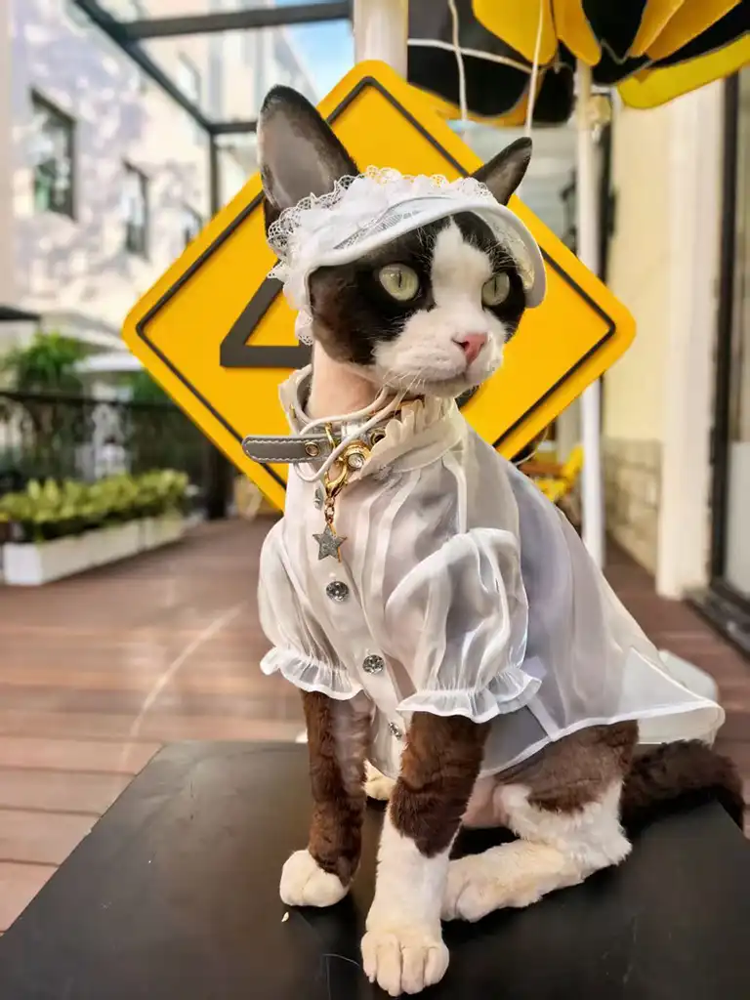
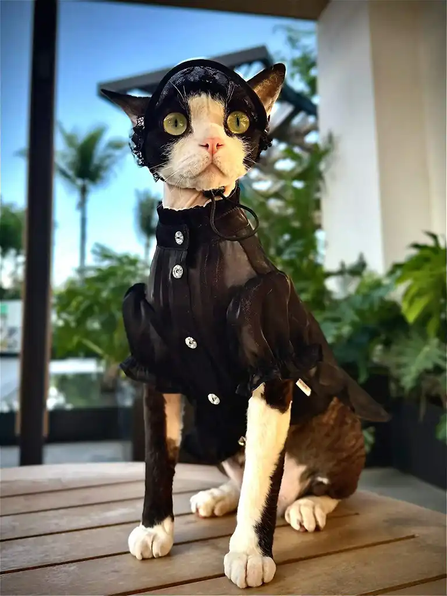
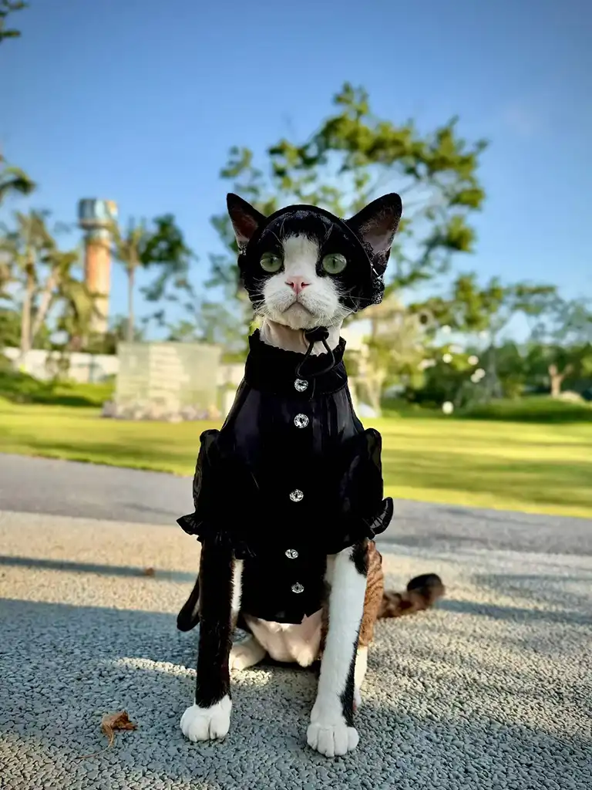
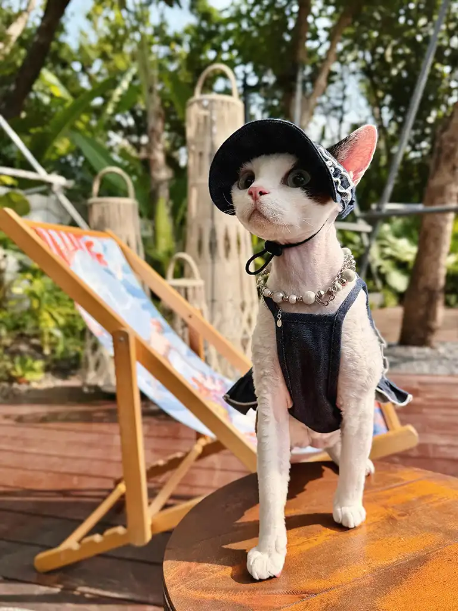

What if the "luxury" cat outfit you admired online was just a counterfeit logo stitched onto cheap polyester? For thousands of pet parents chasing designer cat clothes, that's the disappointing reality.
The global pet apparel market is now worth roughly $6 billion and growing about 8% a year, according to Grand View Research. But most of what gets labeled "designer" is a mass-produced costume — or a knockoff of a human fashion house's trademark. Youna takes the opposite path: original, owned designs your cat can wear in comfort, and you can wear with pride.
You've probably scrolled past the same three cat costumes a hundred times — the tiny tuxedo, the monogram sweater, the sequined party dress. Cute in a thumbnail, forgettable in person. We felt that gap too. You want something with design intent: clothes that photograph like cat couture, feel soft against fur, and read as a real collection rather than a costume drawer. This guide walks you through Youna's six original statement pieces, the fabrics and craft behind them, and exactly how to style, size, and safety-check them for your cat. If you're building a fuller setup, our complete pet supplies collection pairs naturally with the looks below.
Key Takeaways
- Youna's collection is built on original designs across gothic, Victorian, garden, and modern-minimalist moods — with no trademark-infringing logos.
- The line uses breathable, tactile fabrics (velvet, quilted satin, denim, lace) chosen for both look and feline comfort.
- Six statement pieces span modern luxe to dark romance, each linked to its own product page.
- Clothes are safe when you choose soft fabrics, easy-release fastenings, and supervise wear — especially for hairless breeds.
- Correct sizing starts with chest girth, not weight; a simple four-step measure keeps the fit comfortable.
01 What Are Designer Cat Clothes?
Designer cat clothes are original, brand-owned garments made for cats using premium fabrics and considered tailoring — not licensed knockoffs of human luxury labels. They prioritize a cat's comfort, safe fastenings, and a distinct aesthetic you won't see repeated on every feed.
Look for these traits in any piece that calls itself "designer":
- Original, brand-owned designs — no borrowed logos or monograms.
- Premium, breathable fabrics and considered tailoring, not costume polyester.
- Safe, easy-release fastenings placed where paws can't snag.
- A distinct aesthetic you won't see repeated across every competitor's feed.
02 Meet the Collection — Original Designer Cat Clothing, Not Counterfeit Luxury
When we say cat couture, we mean designs we actually own. That difference is the whole point of this collection. The pet-apparel internet is crowded with pieces that borrow — sometimes illegally — the names and monograms of human fashion houses. They look familiar in a thumbnail and feel hollow in the hand. Youna's answer is original design cat clothes: cohesive looks developed in-house across four moods, each with its own silhouette, fabric story, and styling logic.

Why does original design matter beyond legality? Because a real design language lets a collection hang together. A gothic dress and a Victorian gown can share a lace vocabulary while reading as two different moods. A denim set and a floral dress can alternate between street and garden without clashing. The result is a wardrobe, not a pile of costumes — the kind of designer cat clothes you can build on piece by piece.
Consider Daniel, a cat owner in Lisbon. Last November he ordered a "designer" cat coat from a marketplace — a piece wearing a famous monogram. Within two wears the printed logo cracked and peeled, and the stiff synthetic lining left his tabby, Mochi, scratching at her sides. "It looked expensive in the photo and felt cheap on her back," he told us. He switched to Youna's original velvet waistcoat and never looked back. That arc — from borrowed logo to owned design — is exactly what this collection is built to prevent.
Ready to see the looks? Explore the full six-piece designer cat clothes collection and find the silhouette that fits your cat's personality.
03 The 6 Original Designer Cat Clothes Statement Pieces
Six designs, six moods. Each piece below is an original Youna silhouette with its own fabric story, and each links to its dedicated product page where you can check colours, sizing, and care.
Silver Quilted Vest Set — Modern Luxe
Clean lines, a lightly padded quilted satin front, and a minimal silver trim give this set its contemporary edge. It's the piece for the cat who suits a tailored, almost architectural look — sharp enough for a product launch photo, soft enough for a chilly evening indoors. The vest uses a simple side fastening, so getting it on stays quick and calm. Discover the silver quilted vest set for cats for the full spec, colour options, and size chart.
White Victorian Gown — Regal Heritage

A floor-sweeping skirt, structured bodice, and delicate lace trim make this gown the collection's most formal statement. It reads like a miniature heirloom portrait — perfect for birthdays, holidays, and the kind of photo your friends save. The cotton-blend lining keeps the drama comfortable rather than costume-y, which is what separates a real victorian cat dress from a party prop. See the white Victorian gown for cats to view the lace detail up close and confirm the right size.
Grey Velvet Waistcoat — Tactile Elegance
Velvet does something no other fabric quite manages: it reads as luxurious and feels forgiving. This waistcoat pairs a deep grey pile with a slim cut, so it photographs rich without bulk. It's a quiet flex — the piece you reach for when you want "elevated" rather than "theatrical." Explore the grey velvet waistcoat for cats for fabric weight, lining notes, and sizing.
Floral Garden Dress — Romantic Whimsy
Soft petals, a gathered waist, and a breezy skirt give this dress its garden-party charm. It's built for natural light and outdoor shoots among real flowers, where the print blends instead of competes. The lightweight weave keeps your cat cool during longer wear. View the floral garden dress for cats to see the full bloom of the print and pick your size.
Black Gothic Dress — Dark Romance

Sheer black layers, a dramatic lace hat, and a cinched waist make this the collection's moodiest piece. It is gothic cat clothes at their most refined — all shadow and lace, never costume. The breathable mesh means the drama doesn't come with overheating, so your cat stays composed through a whole shoot. See the full detail shot and measurement guide on the black gothic dress for cats product page.
White Victorian Collar Dress — Refined Minimalism
Where the gown goes maximal, this collar dress goes quiet: a crisp white dress anchored by an ornate Victorian collar. It's the most versatile piece in the line — equally at home in a studio portrait or a casual weekend frame. See the white Victorian collar dress for cats for the collar construction and size options.
04 The Fabrics & Craft Behind the Line
What fabrics are best for cat clothes?
The best fabrics for cat clothes are soft, breathable, and low-irritation. Here's what we reach for, and why:
- Cotton & jersey — soft, breathable, low-irritation; the everyday base layer.
- Velvet — depth and a forgiving hand-feel that reads as luxury on camera.
- Lightweight denim — looks right on the street and breathes better than you'd expect.
- Satin blends & quilted satin — structure without weight.
- Lace (as trim or overlay) — detail, not a full restrictive layer.
Avoid: stiff, heat-trapping synthetics that rub sensitive skin or trap warmth during a shoot.
We build every piece on that rule. We reach for velvet when we want depth and a forgiving hand-feel. Quilted satin gives the silver vest its structure without weight. Lightweight denim brings street credibility and surprising breathability. Lace is used as trim and overlay rather than a full layer, so it reads as detail, not constraint. None of it is chosen to look impressive on a mannequin and fail on a living cat.
Good cat clothes live or die in the cutting, not just the cloth. Each garment is shaped to a cat's real anatomy — a narrow chest, a high waist, room at the shoulders. Seams are finished so they don't chafe, and fastenings are placed where paws can't snag them. That's the real gap between luxury cat clothes and a costume: what touches the cat's skin matters as much as what's in the photo.
When you choose high end cat clothes or premium cat clothes from an original studio, you're buying a standard we hold ourselves to: the cat, not the camera, gets the final say.
Caring for your cat's designer outfit
These are premium pieces, so treat them that way: hand-wash cold or use a gentle machine cycle in a laundry bag, reshape and line-dry, and store on a padded hanger. Velvet and lace prefer a light steam refresh over direct heat. Wholesale, pieces start from about $12–$22 per unit — a fraction of branded cat couture retail, and exclusive to your catalog as original Youna designs.
05 How to Style Your Cat for Photos & Special Occasions
The best cat clothes for Instagram aren't the loudest — they're the ones matched to a setting. Treat each look like a small photo concept, and you'll get cat outfit ideas that actually convert to saves. Here are our six original designer cat clothes styled four ways:
- Gothic → moody backdrop. A dark wall, a single warm light, and the black gothic dress create instant atmosphere. Shoot slightly from above for a regal, brooding frame.
- Victorian → vintage props. A brass mirror, a velvet cushion, or an old book turns the white gown into a portrait. Soft window light flatters the lace.
- Garden → natural light. The floral dress belongs among real plants. Shoot in open shade so colours stay true and your cat stays cool.
- Denim → street energy. A sunny step, a sunhat, and a relaxed pose read as everyday cool rather than a staged set — the appeal of a cat denim outfit or denim cat jacket done right (see the look in our photos below).
Here are two real examples from our community. First, the gothic outdoor look:

And the denim street look:

When pet influencer @LunaTheFluff turned three this May, her owner Priya booked a small studio and dressed her in the black gothic dress with the lace hat. They kept the session to twelve minutes, used a single ring light, and let Luna wander between takes rather than holding her still. The resulting carousel earned over 40,000 likes and became Priya's most-saved post of the year. The lesson: match the outfit to the mood, keep sessions short, and let the cat lead.
A few universal tips: shoot in natural light whenever possible, capture the in-between moments rather than only posed frames, and echo your own outfit's palette so the two of you read as a pair. Planning a shoot? Revisit this styling guide whenever you need a theme refresher.
06 Are Designer Cat Clothes Safe & Comfortable?
Are clothes safe for cats?
Yes — when made from soft, breathable fabric with easy-release fastenings and worn for short, supervised sessions. Always check for rubbing, overheating, or stress, and remove the garment if your cat seems distressed.
When dressing a cat, run through this quick checklist:
- Soft, breathable fabric + easy-release fastenings.
- No dangling strings a cat could chew.
- Short, supervised wear sessions.
- Watch for overheating or panting — especially long-haired breeds.
- Pair with a breakaway cat collar that releases under pressure.
Comfort starts with the fabric, which is why we avoid stiff, heat-trapping synthetics. But safety is also about the small things: fastenings that release if snagged, no dangling strings a cat could chew, and a fit that never restricts breathing or movement. These principles follow ASPCA pet costume safety guidance — the safest choice for any cat in clothing.
Breed matters more than most people expect. Hairless cats like Sphynx feel the cold keenly; Mara, a Sphynx owner in Chicago, noticed her cat Nero shivering at 19°C indoors last January. A lightly padded vest changed his evenings — he tolerated it within a day and stopped seeking the radiator. PetMD notes that while most cats don't need clothes, hairless and thin-coated breeds can genuinely benefit from a layer. Long-haired cats, by contrast, can overheat faster, so keep sessions brief and watch for panting. Even the finest designer cat clothes should never be forced; the goal is to offer warmth or style your cat accepts willingly.
Start with five minutes, watch body language, and build up only if your cat stays relaxed. A content cat makes a better photo than a restless one.
07 Sizing & Fit: How to Measure Your Cat for Designer Cat Clothes
A poor fit ruins even the best design — and the wrong size is the most common reason cats reject clothes. If you've wondered how to measure a cat for clothes, the fix is simpler than you think: measure before you buy. Our designer cat clothes use a cat-specific size run (XS–L, 2–6.5 kg), not dog or human sizing.
- Measure chest girth. Wrap a soft tape around the widest part of the rib cage, just behind the front legs. This is your primary fit number.
- Measure neck circumference. Circle the base of the neck where a collar sits, leaving room for one finger.
- Measure back length. From the base of the neck (where the shoulders meet) to the base of the tail.
- Check the chart by chest, not weight. Weight alone is unreliable — chest girth predicts comfort far better.
| Size | Chest (cm) | Neck (cm) | Back (cm) | Weight guide |
|---|---|---|---|---|
| XS | 28–34 | 18–22 | 22–26 | 2–3 kg |
| S | 34–40 | 20–24 | 26–30 | 3–4 kg |
| M | 40–46 | 22–26 | 30–34 | 4–5 kg |
| L | 46–54 | 24–28 | 34–40 | 5–7 kg |
When a cat sits between sizes, size up — a touch of ease beats a restrictive squeeze. A great fit makes any luxury cat clothes purchase feel worth it, and each product page above links to its own size notes so you can confirm the specific cut before checkout.
08 The Perfect Gift for Cat Lovers
Few gifts land like something made for a beloved pet. A Youna piece turns a birthday, adoption anniversary, or holiday into a moment worth photographing — and it's the rare present the recipient will actually use. For the pet influencer in your life, a single statement outfit can anchor a whole content week. For a first-time cat parent, a versatile piece like the collar dress is an easy, flattering starting point. Designer cat clothes make thoughtful gifts because they're fun and they actually get worn.
If you're assembling a larger surprise, our complete pet supplies collection rounds out the gift with practical extras that pair naturally with the clothing. Wrap the box, add a note about the design story, and you've given more than an outfit — you've given them a reason to keep the camera out all week.
09 Why Choose Youna Original Design
The short answer: we own what we make. Where much of the market leans on borrowed logos or generic costumes, Youna builds luxury cat clothes from original designs developed in-house. That means no trademark risk, a consistent aesthetic across the collection, and a brand story you can stand behind. That's why we call them original design cat clothes — not someone else's knockoff with our name on it.
It also means manufacturing discipline. Our apparel background shows in the finishing — clean seams, considered fastenings, fabrics chosen for feline comfort as much as visual impact. You're not buying a logo; you're buying a garment engineered for a cat. For pet parents tired of peeling knockoffs and the same three costumes, designer cat clothes from an original studio are simply the smarter buy.
10 Conclusion
Youna's original high-end cat fashion collection shows designer cat clothes can be beautiful and still treat the cat right. Six statement pieces — from the silver quilted vest to the white Victorian collar dress — give you a real wardrobe across gothic, Victorian, garden, and modern-minimalist moods. Behind every look is breathable fabric, tailoring cut for a real cat, and one rule we won't break: the cat stays safe.
Ready to dress your cat in something original? Here's where to go next:
- View the full collection. Explore all six original pieces and pick your cat's statement look: the silver quilted vest set for cats, white Victorian gown for cats, grey velvet waistcoat for cats, floral garden dress for cats, black gothic dress for cats, and white Victorian collar dress for cats.
- Revisit the styling guide above whenever you plan a shoot or special occasion — theme-by-theme ideas are waiting in the How to Style section.
- Contact the Youna team with any sizing or custom questions — we're happy to help you find the perfect fit.
Your cat deserves clothes designed for them, not borrowed from someone else. Start with one piece, and see how original design changes the whole frame.
11 For Retailers & Wholesale Buyers
So far this guide has spoken to cat parents hunting for the perfect outfit. But if you run a pet boutique, sell on Amazon or Shopify, or build a private-label pet brand, this collection was written for you too. Every look above is also available as a ready-made wholesale line — designed in-house, manufactured by a cat clothing manufacturer China partner we control, and shipped to your door as your own catalogue. The six statement pieces aren't just photo props; they're proven, sellable SKUs with factory pricing that protects your margin.
Think of the section above as your showroom and the sections below as your back office. We'll walk through why sourcing cat apparel from China makes commercial sense, how custom branding turns our designs into your brand, the hard numbers on MOQ and lead time, and exactly how a wholesale cat apparel supplier like Youna keeps the whole import simple. Whether you need 200 pieces to test a hero SKU or a full private-label range, the path from "I love that look" to "it's on my shelf" is shorter than you think.
You can start small and stay agile. The silver quilted vest (wholesale) and the black gothic dress (wholesale) are two of our most re-ordered styles for first-time importers — both sit at the lower end of our factory price band, so a trial batch stays affordable. Pair either with our complete pet supplies collection to widen the basket without adding a second supplier.
If you already know you want a quote, jump straight to our free sourcing quote — or read on to see how the line comes together.
What is a cat clothes manufacturer in China?
A cat clothes manufacturer in China is a factory or sourcing-led supplier that designs and produces feline apparel — vests, gowns, dresses, and waistcoats — for export to global B2B buyers. Unlike a reseller, a China-based manufacturer controls patterns, fabrics, and production, offering:
- Original, owned designs you can private-label without trademark risk.
- Low MOQs (from 200 pcs/style) for small and test batches.
- Factory pricing ($12–$22/pc) far below Western retail.
- OEM customization — logo, colourway, and packaging.
- End-to-end sourcing support — sampling, QC, and shipping.
12 Why Source Cat Apparel from China
If you've only ever bought cat clothes from a domestic distributor, the math of a China pet clothing supplier can feel too good to be true — until you see the supply chain behind it. China's pet-apparel clusters (Guangdong, Zhejiang, and Jiangsu lead) bundle fabric mills, trim houses, and sewing lines within a short drive of each other. That density is why a pet apparel factory China can move from a sketch to a finished sample in days, not months, and why small brands get the same production discipline once reserved for big-box orders.
Three advantages matter most for a boutique or Amazon seller. Cost: because labour, fabric, and finishing sit in one ecosystem, ex-factory pricing runs roughly $12–$22 per piece — versus $29–$75 retail for comparable "designer" cat apparel in Western markets. Original-design capacity: our in-house studio develops cohesive looks you won't find cloned across ten competitor feeds, so your shelf stays distinctive. Flexible small runs: the same line that fills a container for a chain will also run a 200-piece trial for a startup, because flexible cat apparel wholesale China production is now the norm, not the exception.
To make that concrete: the grey velvet waistcoat (low MOQ) leaves our line at roughly $12–$16 ex-factory and retails around $34–$45 in boutiques — a margin that funds marketing and repeat buys. The white Victorian gown (MOQ 200) sits higher in both cost and retail, but its "heirloom portrait" appeal drives the kind of gift-season volume that pays back a small first order quickly. Sourcing from China isn't about chasing the cheapest stitch; it's about buying original design at a price that lets your business breathe. The U.S. pet industry topped $147 billion in 2024, according to the American Pet Products Association — a market large enough for new private-label entrants.
Curious how we manage the supply side for you? Our China sourcing agent service handles supplier selection end to end — the topic of section 15 below.
13 Custom & Private Label Cat Clothing
There's a real gap between admiring a design and putting your own label on it — and that's exactly where OEM comes in. With Youna as your OEM pet clothes manufacturer, our original silhouettes become your label: we apply your woven logo tags, match your brand colourway, and print or emboss your packaging so the piece arrives as unmistakably yours. Nothing about the garment references Youna unless you want it to — the cat sees the same comfort, your customer sees your brand.
This is what private label pet clothing is built for: a small brand can launch a "designer" cat line without hiring a pattern maker or auditioning ten factories. You pick the hero pieces from the collection above, tell us your trim and palette, and we return a sample wearing your identity. Because the underlying designs are original and owned by us, you get the look of a luxury house with none of the trademark risk that sinks resellers of borrowed logos.
For true differentiation, custom cat clothes OEM goes a step further: we adjust necklines, add a collar, swap a fabric, or develop an entirely new colourway for your range. When the goal is to design custom cat outfits for my brand rather than re-label a template, our OEM studio develops fresh silhouettes to your brief. The floral garden dress (custom OEM) and the Victorian collar dress (private label) are two frequent starting points for brands wanting a signature piece. And remember the callout in our sidebar — Low MOQ from 200 pcs — means a private-label trial doesn't require a warehouse-sized commitment.
Take Mara's boutique in Rotterdam. She resold generic cat costumes for two years before switching to a private-label run of our grey velvet waistcoat and floral garden dress. Within one season her repeat-customer rate climbed, because the pieces actually photographed well and held up to washing — and her shop finally had a look no competitor down the street carried. That's the quiet payoff of owning your design rather than renting someone else's.
Ready to put your name on original design? Explore our OEM & private label pet apparel program, or talk to us about custom branding and private label service options for the cat line.
14 MOQ, Pricing & Lead Time for Cat Apparel
Buying wholesale should feel like reading a spec sheet, not decoding a riddle. Here are the working numbers for our cat apparel line — the same figures a low MOQ pet clothing manufacturer partner would quote, laid out plainly so you can plan cash flow and launch dates.
| Term | Standard | Notes |
|---|---|---|
| MOQ (min. order qty) | 200 pcs / style | Mix colours within a style to hit the minimum. |
| Ex-factory price | $12–$22 / pc | Price at the factory gate, before freight and duties. Varies by fabric weight and trim. |
| Sample lead time | 5–7 days | Pre-production sample for your sign-off. |
| Bulk lead time | 12–20 days | After sample approval; rush slots on request. |
| Shipping | By air or sea | Air ~7–12 days; sea ~25–35 days to major ports. |
Those bands answer the questions B2B buyers type most: cat apparel MOQ China buyers typically find 200/style here versus 500–1,000 at many factories; cat clothes bulk order pricing stays in the $12–$22 ex-factory window even at scale, because our cluster sourcing keeps fabric costs down. A 200-piece trial of the grey velvet waistcoat (low MOQ) at ~$14 average lands near $2,800 in goods — a realistic first order for a Shopify store testing the category.
Two planning notes. First, sample time and bulk time are sequential, so budget about 3–4 weeks door-to-door by air from sample request to stock. Second, the $12–$22 figure is ex-factory; your landed cost (ex-factory plus freight, duties, and fulfillment) runs higher, which our team estimates per order. For the full picture on getting goods from a cat clothing manufacturer China to your warehouse, see section 15.
15 How a China Sourcing Agent Simplifies Cat Apparel Import
Sourcing cat clothes from China sounds straightforward until the first container arrives with the wrong colour and no recourse. A cat clothes sourcing agent exists to close that gap — and Youna has done it for hundreds of businesses since 2016. Rather than you negotiating blind with a factory you've never met, we run the import as a managed process.
It starts with supplier screening: we shortlist audited pet-apparel factories against your spec, not a marketplace listing. Next is the factory audit — on-site checks of capacity, labour, and quality systems so you're not trusting a polished brochure. Once production runs, our quality control team inspects against the approved sample at key stages, catching a mis-cut size run before it ships instead of after. Finally, we handle logistics: consolidation, freight booking, and customs paperwork, so a China sourcing agent pet apparel engagement ends with cartons at your door, not a panic at the port.
This is also the practical answer to how to import cat clothes from China without hiring a Guangzhou office. Our China sourcing agent service covers screening through shipping, while custom branding and private label service fold labelling and packaging into the same workflow. The result is fewer surprises: you approve one sample, we protect that standard through bulk, and you receive what you signed off on. For a small brand, that reliability is worth more than the few cents a factory-direct "deal" might save — because that saving disappears the moment something goes wrong. U.S. importers can check duty and entry rules via U.S. Customs and Border Protection before they commit.
Want the playbook step by step? The next section turns this process into an actionable launch plan.
16 From Inspiration to Inventory: Build Your Cat Line in 5 Steps
You found a look you love in this guide — now make it stock you sell. Here's the short path from inspiration to inventory for custom cat clothing for small business, whether you're a boutique owner or a first-time Amazon seller.
- Pick your hero pieces. Start with two or three proven sellers — the silver quilted vest (wholesale) and black gothic dress (wholesale) are dependable anchors — rather than a dozen untested SKUs.
- Request samples (5–7 days). Feel the fabric and check the fit on a real cat before committing; this is your only pre-bulk checkpoint.
- Add your brand. Send us your logo and palette for private label service, or brief a custom cat clothes OEM tweak so the line reads as yours.
- Approve and produce (12–20 days). We run bulk against your signed sample, with QC at the factory so the 200 pieces match what you approved.
- Receive and restock. Goods land at your warehouse; reorder by the same spec as demand proves out. Pair apparel with the breakaway cat collar and our complete pet supplies collection to lift average order value.
That's the whole loop — and it's exactly where to source cat clothes if you want original design without trademark risk or a warehouse of commitment. Youna built this collection to be admired and imported; the same six looks that photograph beautifully for a cat parent sell just as well under your label.
17 Frequently Asked Questions
What are designer cat clothes?
Designer cat clothes are original, brand-owned garments made for cats using premium fabrics and considered tailoring — not licensed knockoffs of human luxury labels. They prioritize a cat's comfort, safe fastenings, and a distinct aesthetic you won't see repeated on every feed.
What fabrics are best for cat clothes?
The best fabrics for cat clothes are soft, breathable, and low-irritation: cotton, jersey, velvet, lightweight denim, satin blends, and lace used as trim or overlay. Avoid stiff, heat-trapping synthetics that rub sensitive skin.
Are clothes safe for cats?
Yes — when made from soft, breathable fabric with easy-release fastenings and worn for short, supervised sessions. Always check for rubbing, overheating, or stress, and remove the garment if your cat seems distressed.
What is the MOQ for custom cat clothes?
Our standard minimum is 200 pieces per style, with colours mixable within that style to reach the minimum. That low threshold lets boutiques and Amazon or Shopify sellers test a hero SKU without a warehouse-sized commitment. Private-label and custom-colour runs follow the same 200-piece floor. If you need a smaller pilot, ask our team — select styles occasionally run lower for first orders.
Can you private label / OEM cat apparel with my logo?
Yes. As an OEM pet clothes manufacturer, we apply your woven logo tags, match your brand colourway, and customise packaging so the garment ships as your brand, not ours. For deeper differentiation, custom cat clothes OEM adjusts necklines, trims, or fabrics against your brief. Because the underlying designs are original and owned by Youna, you get a luxury look with no trademark risk.
How long does cat apparel production & shipping take?
Sampling takes 5–7 days for a pre-production piece you approve. Bulk production runs 12–20 days after sign-off. By air, goods reach most destinations in about 7–12 days; by sea, roughly 25–35 days to major ports. Plan about 3–4 weeks door-to-door by air from sample request to stocked inventory.
How do you verify cat clothing factories in China?
We verify through a managed process: supplier screening against your spec, on-site factory audits of capacity and quality systems, and stage-by-stage QC against the approved sample. As your cat clothes sourcing agent, Youna catches mis-cuts or wrong colours before bulk ships rather than after, then handles consolidation and customs so cartons arrive as specified.
Why source cat clothes from China vs local suppliers?
China's pet-apparel clusters bundle mills, trims, and sewing lines close together, enabling original design, fast sampling, and low MOQ pet clothing manufacturer runs that local suppliers rarely match. Ex-factory pricing of $12–$22 per piece versus $29–$75 Western retail protects your margin, while a sourcing agent removes the distance and language risk. You get original design at a price that lets a small brand compete.
Find Us on Social Media
Follow Karsa for sourcing tips, product updates, and factory insights from China.